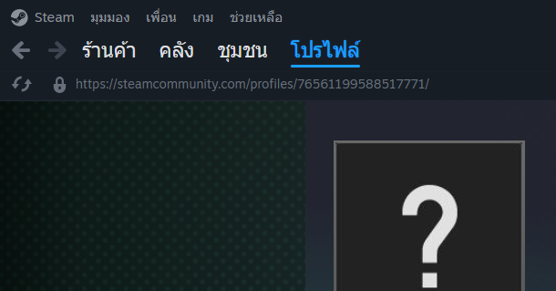
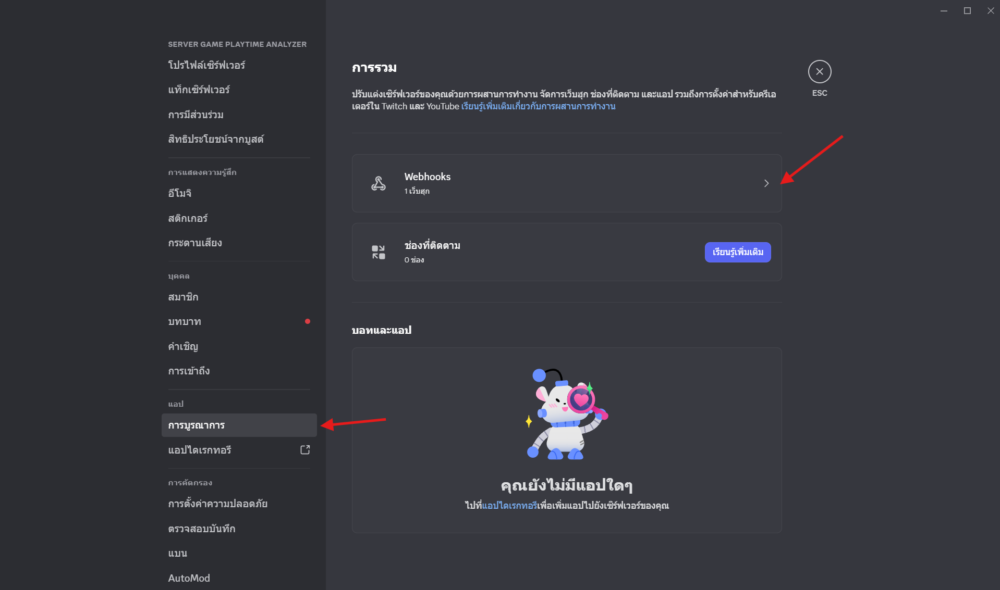
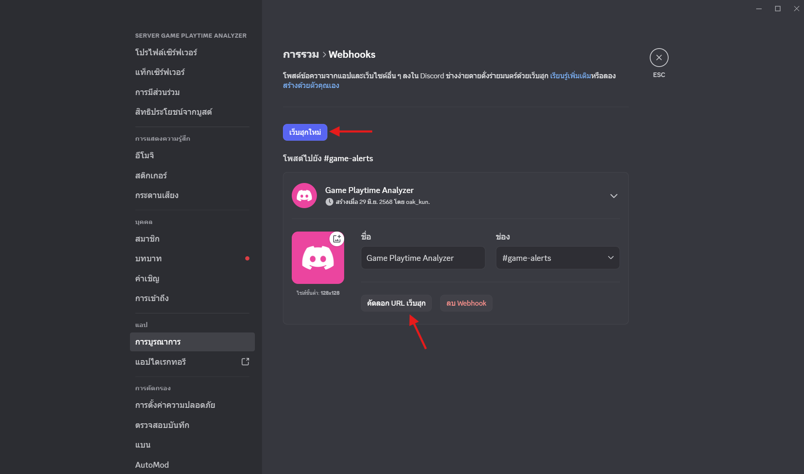

Steam ID คือหมายเลขประจำตัวบัญชี Steam ซึ่งจำเป็นสำหรับแอปของเราในการดึงข้อมูลเวลาเล่นเกม
ไปที่หน้าโปรไฟล์ Steam ของคุณและคัดลอก Steam ID (ที่เป็นตัวเลขยาวๆ) จาก URL ตามภาพประกอบ หรือใช้บริการแปลง URL เป็น ID ที่เว็บไซต์ steamid.io
ใช้สำหรับรับการแจ้งเตือนเวลาเล่นเกมเกินกำหนดผ่าน Discord
ในแอป Discord คลิกขวาที่ไอคอนเซิร์ฟเวอร์ของคุณ แล้วเลือก Server Settings → Integrations และไปที่เมนู Webhooks
คลิก "New Webhook" จากนั้นตั้งค่าต่างๆ และกด "Copy Webhook URL" เพื่อนำ URL มาใช้งาน
